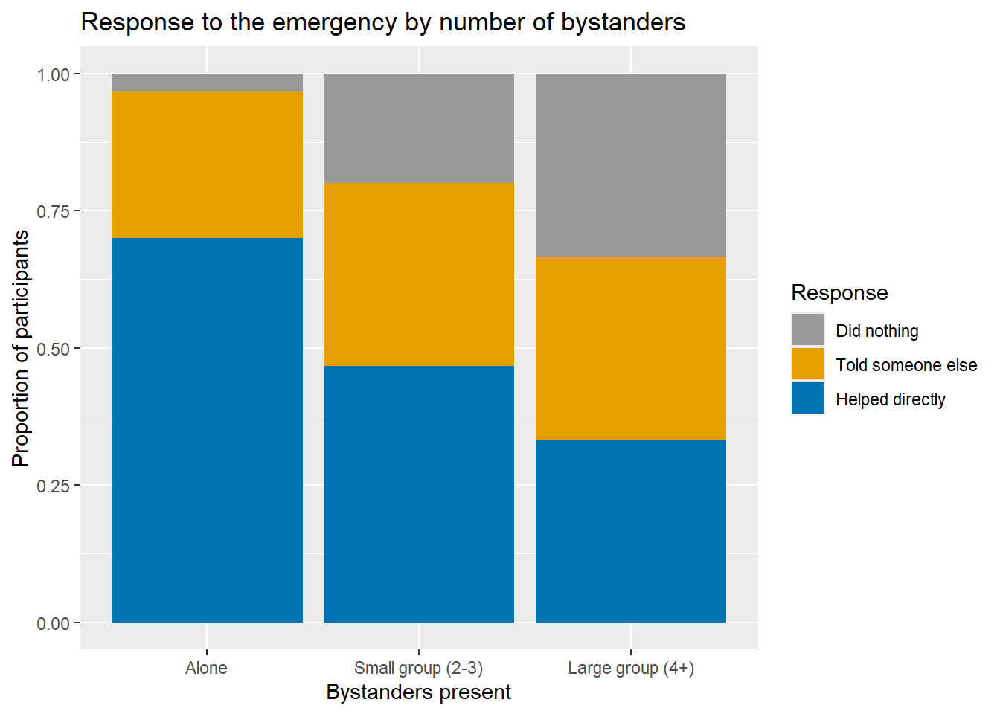
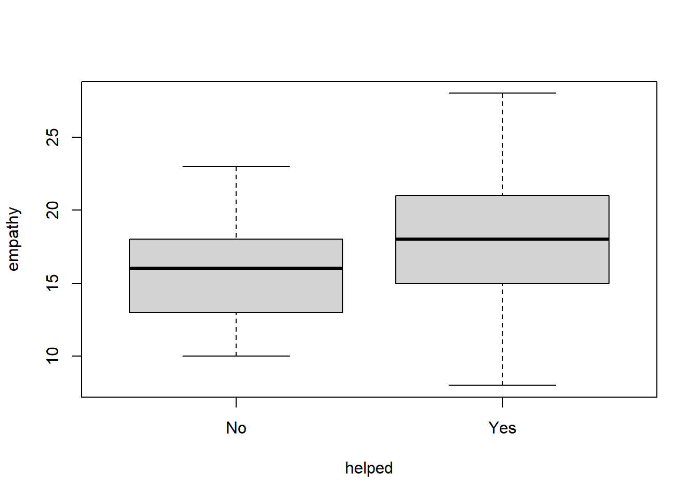

library(ggplot2)PS71020_Unit8_Homework
Categorical Data
Learning Outcomes:
1 - Perform a chi-square test and see a full APA write-up
2 - Perform a Fisher Exact test and see a full APA write-up
3 - Perform a logistic regression and see a full APA write-up
Materials Used:
We will use the package ggplot2 this is already installed on the RStudio Server but if you are working on your own Laptop you may need to install it.
CREATE A NEW PROJECT
Just as we did in previous weeks we are going to start by creating a new project for this week’s homework. Download the data from the VLE (In the Week 8 Homework Materials section) and then copy it in the folder you created your project in. You can also find a direct download link for the data here: Github Link.
If you are working on the RStudio Server, then you will need to download the file to your computer and then upload it to the correct folder on the server.
Also create a new script in this folder so you can copy the lines of code needed to run this analysis yourself using just that script.
Now let’s load the packages that we will need for this analysis.
SECTION A. THE DATASET
This data set is generated data and comes from an imaginary study that investigates the factors that affect the likelihood of people intervening in an emergency medical situation in which they are a bystander.
The data has 180 participants and these columns: id - Participant ID
group_size - The size of the group present at the incident (Alone / Small group (2–3) / Large group 4+)
training - What level of training the individual has (None / First aid / Medical professional)
empathy - A questionnaire that measures their empathy levels higher scores indicate greater empathy (0–28)
response - What they did in response to the situation (Did nothing / Told someone else / Helped directly).
First we read the .csv file
df <- read.csv("bystander_study.csv")And then we re-code categorical variables
df$group_size <- factor(df$group_size,
levels = c("Alone", "Small group (2-3)", "Large group (4+)"))
df$training <- factor(df$training,
levels = c("None", "First aid", "Medical professional"))
df$response <- factor(df$response,
levels = c("Did nothing", "Told someone else", "Helped directly"))Then, check the first few rows of the data set:
head(df) id group_size training empathy response
1 1 Alone None 17 Told someone else
2 2 Alone None 18 Helped directly
3 3 Alone First aid 17 Helped directly
4 4 Alone None 23 Helped directly
5 5 Alone First aid 21 Helped directly
6 6 Alone Medical professional 14 Helped directlyHow could we check the counts in each of the categories of the outcome variable response?
There are multiple ways of doing this but if we follow the method used in the lab the table() function is the easiest and also what we can use later to build contingency tables.:
table(df$response)
Did nothing Told someone else Helped directly
34 56 90 SECTION B. CONTINGENCY TABLE & CHI-SQUARE
The first question that the researchers want to investigate is if the size of the group that the participant was related to the way that they responded.
Create a contingency table (with row and column sums) and also a proportions table
tab_g <- table(df$group_size, df$response) # predictor first, so it forms the rows
addmargins(tab_g)
Did nothing Told someone else Helped directly Sum
Alone 2 16 42 60
Small group (2-3) 12 20 28 60
Large group (4+) 20 20 20 60
Sum 34 56 90 180proportions(tab_g, margin = 1) # row proportions
Did nothing Told someone else Helped directly
Alone 0.03333333 0.26666667 0.70000000
Small group (2-3) 0.20000000 0.33333333 0.46666667
Large group (4+) 0.33333333 0.33333333 0.33333333round(100 * proportions(tab_g, margin = 1), 1) # row percentages
Did nothing Told someone else Helped directly
Alone 3.3 26.7 70.0
Small group (2-3) 20.0 33.3 46.7
Large group (4+) 33.3 33.3 33.3It would be good to visualise this, in the lab we created a stacked bar chart to illustrate how a binary outcome was related to a 3 level predictor.
Try to adapt that code to show how this 3-level outcome is related to the 3-level predictor
ggplot(df, aes(x = group_size, fill = response)) +
geom_bar(position = "fill") +
scale_fill_manual(values = c("Did nothing" = "#999999",
"Told someone else" = "#E69F00",
"Helped directly" = "#0072B2")) +
labs(title = "Response to the emergency by number of bystanders",
x = "Bystanders present", y = "Proportion of participants", fill = "Response")
Perform a chi-square test, does this show a significant deviation from what would be expected under the null hypothesis?
chi_g <- chisq.test(tab_g)
chi_g
Pearson's Chi-squared test
data: tab_g
X-squared = 23.191, df = 4, p-value = 0.000116Yes, there is a significant result (p < 0.001).
However, before we trust the robustness of this result we should check the assumptions of expected counts being sufficient.
What are the two rules about expected counts? Check whether these are satisfied in this data.
The rules are: 1 - Are all expected counts at least 1 2 - Are at least 80% of the expected counts at least 5
round(chi_g$expected, 2) #display expected count table
Did nothing Told someone else Helped directly
Alone 11.33 18.67 30
Small group (2-3) 11.33 18.67 30
Large group (4+) 11.33 18.67 30all(chi_g$expected >= 1) # if all are at least 1 then this returns TRUE[1] TRUEmean(chi_g$expected >= 5) # if the mean of this is at least 0.8 then at least 80% of cells have at least 5[1] 1#Here: 1 (100%) means every cell at least 5, so the chi-square is validWe meet both of these assumptions, so the results of the chi-square test appear valid.
Next we want to know which individual cells are different from the expected counts at the .05 level. We do this by checking another component of the chisq.test() output.
What is this component? What does it represent and which cells does it indicate a significantly different than expected?
We want to check the standardised residuals, they are found in chi_g$stdres. We can print a table of their values like this:
round(chi_g$stdres, 2) # which cells differ from expected? (beyond +/- 1.96)
Did nothing Told someone else Helped directly
Alone -3.77 -0.91 3.79
Small group (2-3) 0.27 0.46 -0.63
Large group (4+) 3.50 0.46 -3.16To check which ones are outside of the +/- 1.96 boundary we can use:
abs(round(chi_g$stdres, 2)) > 1.96 # which cells differ from expected? (beyond +/- 1.96)
Did nothing Told someone else Helped directly
Alone TRUE FALSE TRUE
Small group (2-3) FALSE FALSE FALSE
Large group (4+) TRUE FALSE TRUEWe can see that the Alone-Did Nothing, Alone-Helped Directly, Large Group-Did Nothing, and the Large Group-Helped Directly cells exceed these boundaries. Whereas the Told someone else response was always within the expected boundaries.
Next we want to calculate the effect size measure for a chi-square test.
What is the appropriate effect size measure and how is it calculated? What size of effect is this according to the rules of thumb
The effect size is Cramer’s V, the formula is: V = sqrt(chi-square / (N * (k - 1)))
where k = smaller of rows and columns
Here is the code to calculate it:
chi_sq_g <- unname(chi_g$statistic)
N <- sum(tab_g)
k <- min(dim(tab_g))
V_g <- sqrt(chi_sq_g / (N * (k - 1)))
round(V_g, 2)[1] 0.25This is a medium effect, remember that in this case k = 3 so we use the second row of the table presented in the lecture slides.
The code below produces an APA style write-up of the whole analysis:
# ---- Helper functions for APA formatting --------------------
# APA: no leading zero for p and V, and p < .001 rather than p = .000
apa_p <- function(p) if (p < .001) "< .001" else paste0("= ", sub("^0", "", sprintf("%.3f", p)))
apa_2 <- function(x) sub("^0", "", sprintf("%.2f", x))
cat(sprintf(
"A chi-square test of independence showed that response to the emergency depended on the number of bystanders present, χ²(%d, N = %d) = %.2f, p %s, Cramer's V = %s. Participants who were alone were the least likely to do nothing (%.1f%%), compared with %.1f%% in small groups and %.1f%% in large groups. Adjusted standardised residuals showed that people alone helped directly more often than expected (z = %.2f), while people in large groups did nothing more often than expected (z = %.2f).\n",
chi_g$parameter, N, chi_sq_g, apa_p(chi_g$p.value), apa_2(V_g),
100 * proportions(tab_g, 1)["Alone", "Did nothing"],
100 * proportions(tab_g, 1)["Small group (2-3)", "Did nothing"],
100 * proportions(tab_g, 1)["Large group (4+)", "Did nothing"],
chi_g$stdres["Alone", "Helped directly"],
chi_g$stdres["Large group (4+)", "Did nothing"]))A chi-square test of independence showed that response to the emergency depended on the number of bystanders present, χ²(4, N = 180) = 23.19, p < .001, Cramer's V = .25. Participants who were alone were the least likely to do nothing (3.3%), compared with 20.0% in small groups and 33.3% in large groups. Adjusted standardised residuals showed that people alone helped directly more often than expected (z = 3.79), while people in large groups did nothing more often than expected (z = 3.50).When writing up your own tests there is no need to use code to do it but it does have the advantage of being able to automatically produce the output even if your data changes. However, the disadvantage is that some formatting specific such as using italics on the correct aspects and symbols are missed. Here would be a fully compliant way:
A chi-square test of independence showed that response to the emergency depended on the number of bystanders present, \(\chi^2\)(4, N = 180) = 23.19, p < .001, Cramer’s V = .25. Participants who were alone were the least likely to do nothing (3.3%), compared with 20.0% in small groups and 33.3% in large groups. Adjusted standardised residuals showed that people alone helped directly more often than expected (z = 3.79), while people in large groups did nothing more often than expected (z = 3.50).
SECTION C. FISHER’S EXACT TEST
The next question the researchers wanted to answer is whether the training status of participants was related to how they would respond.
Using the code you used above as a guide run a chi-square test for this analysis and check the assumptions of the test. What do you notice and what should we do instead?
tab_t <- table(df$training, df$response)
addmargins(tab_t)
Did nothing Told someone else Helped directly Sum
None 27 50 58 135
First aid 6 6 26 38
Medical professional 1 0 6 7
Sum 34 56 90 180round(100 * proportions(tab_t, margin = 1), 1)
Did nothing Told someone else Helped directly
None 20.0 37.0 43.0
First aid 15.8 15.8 68.4
Medical professional 14.3 0.0 85.7# Run the chi-square FIRST to see why it can't be trusted: note the warning
chi_t <- chisq.test(tab_t) # R warns: "Chi-squared approximation may be incorrect"Warning in chisq.test(tab_t): Chi-squared approximation may be incorrectround(chi_t$expected, 2)
Did nothing Told someone else Helped directly
None 25.50 42.00 67.5
First aid 7.18 11.82 19.0
Medical professional 1.32 2.18 3.5all(chi_t$expected >= 1) # TRUE ... but[1] TRUEmean(chi_t$expected >= 5) [1] 0.6666667Although all cells have at least 1 expected count in, only 66.7% have expected counts of at least 5. We can see this is due to the Medical Professional group generally having low numbers leading to low counts, which makes sense given the rarity of medical professionals to the general public and first-aid trained people.
We can also see that the chisq.test() function itself produced a warning suggesting that it may be incorrect.
The solution is to use a Fisher’s Exact Test.
fisher_t <- fisher.test(tab_t, workspace = 2e7)
fisher_t
Fisher's Exact Test for Count Data
data: tab_t
p-value = 0.009493
alternative hypothesis: two.sidedFor tables bigger than 2 x 2 R uses the Freeman-Halton extension automatically. A larger ‘workspace’ stops R running out of memory on the exact calculation, this is what the workspace = 2e7 input argument specifies. You can see this discussed in the help for the fisher.test() function.
Fisher’s test gives no test statistic and no effect size, so the p-value is reported alone. (If the exact test were too slow you could use simulate.p.value = TRUE instead.)
The chi-square p (.013) and the Fisher p (.009) are both significant and come to the same conclusion here, but the chi-square p can’t be trusted and wouldn’t always agree
Here would be an APA format write up:
cat(sprintf(
"Because the expected counts were too small for a χ² test (only %.0f%% of cells had an expected count of at least 5), a Fisher-Freeman-Halton exact test was used. Response to the emergency was related to training, p %s. Medical professionals were the most likely to help directly (%d of %d, %.1f%%), followed by first aiders (%.1f%%) and untrained participants (%.1f%%); %.1f%% of untrained participants did nothing.\n",
100 * mean(chi_t$expected >= 5), apa_p(fisher_t$p.value),
tab_t["Medical professional", "Helped directly"], sum(tab_t["Medical professional", ]),
100 * proportions(tab_t, 1)["Medical professional", "Helped directly"],
100 * proportions(tab_t, 1)["First aid", "Helped directly"],
100 * proportions(tab_t, 1)["None", "Helped directly"],
100 * proportions(tab_t, 1)["None", "Did nothing"]))Because the expected counts were too small for a χ² test (only 67% of cells had an expected count of at least 5), a Fisher-Freeman-Halton exact test was used. Response to the emergency was related to training, p = .009. Medical professionals were the most likely to help directly (6 of 7, 85.7%), followed by first aiders (68.4%) and untrained participants (43.0%); 20.0% of untrained participants did nothing.SECTION D. LOGISTIC REGRESSION
The final research question that they wanted to investigate in this study is if the empathy of participants is related to the chances of them helping.
Why can we not use a chi-square test in this situation?
Our predictor here is continuous and chi-square only deals with categorical predictors.
What issue do we have with our outcome variable if we want to perform a logistic regression?
Here our outcome has 3 levels, a binary logistic regression can only deal with an outcome with 2 levels. An extension to this called Multinomial regression could be used in this case but that will be covered in the Advanced Quantitative Methods module next term.
Here we will collapse our outcome variable into a binary variable and use binomial logistic regression. In this case there is a logical way to collapse this variable, we will simply ask did the participant help in any way (“Helped directly” or “Told someone else”) or did they “Did Nothing”. We will create a new variable in our dataframe called helped to hold this and we will make sure this is set up as a factor:
#Collapse the 3-level response into a yes/no variable.
# "No" is first so that glm models the probability of "Yes".
df$helped <- factor(ifelse(df$response == "Did nothing", "No", "Yes"),
levels = c("No", "Yes"))When recoding variables we should always check it worked in the way we intended:
# Always check a recode worked
table(df$response, df$helped)
No Yes
Did nothing 34 0
Told someone else 0 56
Helped directly 0 90Let’s first look at the mean empathy scores when split by the helped variable:
# Look at the data first: mean empathy in each group
tapply(df$empathy, df$helped, mean) No Yes
16.29412 18.23288 Does this suggest that there is much of a difference in empathy scores?
Not really but it is hard to tell without knowing how variable empathy is within each group. We could check by looking at a boxplot of this:
boxplot(empathy ~ helped, df)
This also suggests a great deal of overlap in empathy scores between those who helped and those who did not, although scores are higher in those who did help.
Perform a logistic regression with empathy predicting the odds of helped. What does this show
m_help <- glm(helped ~ empathy, data = df, family = binomial)
summary(m_help)
Call:
glm(formula = helped ~ empathy, family = binomial, data = df)
Coefficients:
Estimate Std. Error z value Pr(>|z|)
(Intercept) -0.84843 0.89929 -0.943 0.3455
empathy 0.13369 0.05268 2.538 0.0112 *
---
Signif. codes: 0 '***' 0.001 '**' 0.01 '*' 0.05 '.' 0.1 ' ' 1
(Dispersion parameter for binomial family taken to be 1)
Null deviance: 174.46 on 179 degrees of freedom
Residual deviance: 167.51 on 178 degrees of freedom
AIC: 171.51
Number of Fisher Scoring iterations: 4We find a significant effect of empathy on the chance of helping.
What does the Estimate output of a logistic regression represent and how can we convert this into something more easily interpretable?
The estimate is the change in the log odds of helping for each 1-point increase in empathy (i.e. the log odds ratio).
To put this in terms of an odds ratio with confidence intervals we can exponentiate this:
exp(coef(m_help))(Intercept) empathy
0.4280857 1.1430352 exp(confint.default(m_help)) 2.5 % 97.5 %
(Intercept) 0.07346032 2.494645
empathy 1.03090160 1.267366We can see that the odds ratio confidence intervals doesn’t include 1.
Relating this back to the boxplot, we have a small (about 1.9 difference in empathy scores) but reliable effect.
Because a 1 point change on the empathy scale is quite small we can instead look at how much the odds ratio changes when we increase empathy by 4 points, which is roughly the standard deviation of the empathy scores:
sd(df$empathy)[1] 3.941471exp(4 * coef(m_help)["empathy"]) empathy
1.707019 Here we get an odds ratio of 1.71.
For a full APA write-up of a logistic regression we need some other statistics. The details of these will be covered in AQM next term. However, they are:
1 - An overall model test, analogous to the F-test we use in a linear regression.
Here we test the Deviance (a measure of error) in the full model against a null model that only contains the intercept.
# Overall model test: likelihood-ratio chi-square (null deviance - residual deviance)
lr_chi <- m_help$null.deviance - m_help$deviance
lr_df <- m_help$df.null - m_help$df.residual
lr_p <- pchisq(lr_chi, df = lr_df, lower.tail = FALSE)
round(c(lr_chi, lr_df, lr_p),3)[1] 6.948 1.000 0.0082 - A measure of how much variance is accounted for, analogous to R2 in linear regression.
Here we use something called McFadden’s Pseudo R2
# McFadden's pseudo R-squared = 1 - residual deviance / null deviance
mcf_r2 <- 1 - m_help$deviance / m_help$null.deviance
round(mcf_r2, 3)[1] 0.04A full APA write-up would be:
co <- summary(m_help)$coefficients
ci <- exp(confint.default(m_help))["empathy", ]
cat(sprintf(
"A logistic regression was used to test whether empathy predicted helping (taking any action, versus doing nothing). The model was significant, χ²(%d, N = %d) = %.2f, p %s, McFadden R² = %s. Higher empathy was associated with greater odds of helping, b = %.2f, SE = %.2f, Wald z = %.2f, p %s. Each additional point on the empathy scale multiplied the odds of helping by %.2f, OR = %.2f, 95%% CI [%.2f, %.2f]; equivalently, a 4-point increase in empathy (about one standard deviation) was associated with %.2f times the odds of helping.\n",
lr_df, nrow(df), lr_chi, apa_p(lr_p), apa_2(mcf_r2),
co["empathy", "Estimate"], co["empathy", "Std. Error"], co["empathy", "z value"],
apa_p(co["empathy", "Pr(>|z|)"]),
exp(co["empathy", "Estimate"]), exp(co["empathy", "Estimate"]), ci[1], ci[2],
exp(4 * co["empathy", "Estimate"])))A logistic regression was used to test whether empathy predicted helping (taking any action, versus doing nothing). The model was significant, χ²(1, N = 180) = 6.95, p = .008, McFadden R² = .04. Higher empathy was associated with greater odds of helping, b = 0.13, SE = 0.05, Wald z = 2.54, p = .011. Each additional point on the empathy scale multiplied the odds of helping by 1.14, OR = 1.14, 95% CI [1.03, 1.27]; equivalently, a 4-point increase in empathy (about one standard deviation) was associated with 1.71 times the odds of helping.